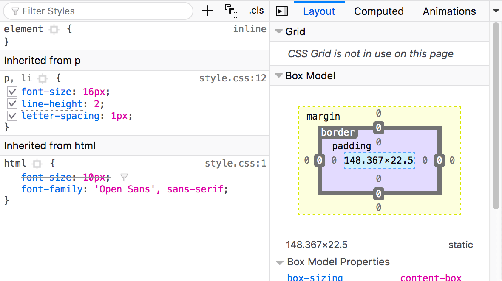

Every modern web browser includes a powerful suite of developer tools. These tools do a range of things, from inspecting currently-loaded HTML, CSS and JavaScript to showing which assets the page has requested and how long they took to load. This article explains how to use the basic functions of your browser's devtools.
The devtools live inside your browser in a subwindow that looks roughly like this, depending on what browser you are using:
How do you pull it up? Three ways:
- Keyboard: Ctrl + Shift + I, except
- Internet Explorer and Edge: F12
- macOS: ⌘ + ⌥ + I
- Menu bar:
- Firefox: Menu
 ➤ Web Developer ➤ Toggle Tools, or Tools ➤ Web Developer ➤ Toggle Tools
➤ Web Developer ➤ Toggle Tools, or Tools ➤ Web Developer ➤ Toggle Tools
- Chrome: More tools ➤ Developer tools
- Safari: Develop ➤ Show Web Inspector. If you can't see the Develop menu, go to Safari ➤ Preferences ➤ Advanced, and check the Show Develop menu in menu bar checkbox.
- Opera: Developer ➤ Developer tools
- Context menu: Press-and-hold/right-click an item on a webpage (Ctrl-click on the Mac), and choose Inspect Element from the context menu that appears. (An added bonus: this method straight-away highlights the code of the element you right-clicked.)
The Inspector: DOM explorer and CSS editor
The developer tools usually open by default to the inspector, which looks something like the following screenshot. This tool shows what the HTML on your page looks like at runtime, as well as what CSS is applied to each element on the page. It also allows you to instantly modify the HTML and CSS and see the results of your changes reflected live in the browser viewport.
If you don't see the inspector,
- Tap/click the Inspector tab.
- In Internet Explorer, tap/click DOM Explorer, or press Ctrl + 1.
- In Microsoft Edge, or Opera, tap/click Elements.
- In Safari, the controls are not so clearly presented, but you should see the HTML if you haven't selected something else to appear in the window. Press the Style button to see the CSS.
Exploring the DOM inspector
For a start, right-click (Ctrl-click) an HTML element in the DOM inspector and look at the context menu. The available menu options vary among browsers, but the important ones are mostly the same:
- Delete Node (sometimes Delete Element). Deletes the current element.
- Edit as HTML (sometimes Add attribute/Edit text). Lets you change the HTML and see the results on the fly. Very useful for debugging and testing.
- :hover/:active/:focus. Forces element states to be toggled on, so you can see what their styling would look like.
- Copy/Copy as HTML. Copy the currently selected HTML.
- Some browsers also have Copy CSS Path and Copy XPath available, to allow you to copy the CSS selector or XPath expression that would select the current HTML element.
Try editing some of your DOM now. Double-click an element, or right-click it and choose Edit as HTML from the context menu. You can make any changes you'd like, but you cannot save your changes.
Exploring the CSS editor
By default, the CSS editor displays the CSS rules applied to the currently selected element:

These features are especially handy:
- The rules applied to the current element are shown in order of most-to-least-specific.
- Click the checkboxes next to each declaration to see what would happen if you removed the declaration.
- Click the little arrow next to each shorthand property to show the property's longhand equivalents.
- Click a property name or value to bring up a text box, where you can key in a new value to get a live preview of a style change.
- Next to each rule is the file name and line number the rule is defined in. Clicking that rule causes the dev tools to jump to show it in its own view, where it can generally be edited and saved.
- You can also click the closing curly brace of any rule to bring up a text box on a new line, where you can write a completely new declaration for your page.
You'll notice a number of clickable tabs at the top of the CSS Viewer:
- Computed: This shows the computed styles for the currently selected element (the final, normalized values that the browser applies).
- Layout: In Firefox, this area includes two sections:
- Box Model: represents visually the current element's box model, so you can see at a glance what padding, border and margin is applied to it, and how big its content is.
- Grid: If the page you are inspecting uses CSS Grid, this section allows you to view the grid details.
- Fonts: In Firefox, the Fonts tab shows the fonts applied to the current element.
Find out more
Find more out about the Inspector in different browsers:
The JavaScript debugger
The JavaScript debugger allows you to watch the value of variables and set breakpoints, places in your code that you want to pause execution and identify the problems that prevent your code from executing properly.

To get to the debugger:
Firefox: Select ➤ Web Developer ➤ Debugger or press Ctrl + Shift + S to open the JavaScript Debugger. If the tools are already displayed, click on the Debugger tab.
Chrome: Open the Developer tools and then select the Sources tab. (Opera works the same way.)
Edge and Internet Explorer 11: Press F12 and then, Ctrl + 3, or if the tools are already displayed, click on the Debugger tab.
Safari: Open the Developer Tools and then select the Debugger tab.
Exploring the debugger
There are three panes in the JavaScript Debugger on Firefox.
File list
The first pane on the left contains the list of files associated with the page you are debugging. Select the file you want to work with from this list. Click on a file to select it and view its contents in the center pane of the Debugger.

Source code
Set breakpoints where you want to pause execution. In the following image, the highlight on the number 18 shows that the line has a breakpoint set.
Watch expressions and breakpoints
The right-hand pane shows a list of the watch expressions you have added and breakpoints you have set.
In the image, the first section, Watch expressions, shows that the listItems variable has been added. You can expand the list to view the values in the array.
The next section, Breakpoints, lists the breakpoints set on the page. In example.js, a breakpoint has been set on the statement listItems.push(inputNewItem.value);
The final two sections only appear when the code is running.
The Call stack section shows you what code was executed to get to the current line. You can see that the code is in the function that handles a mouse click, and that the code is currently paused on the breakpoint.
The final section, Scopes, shows what values are visible from various points within your code. For example, in the image below, you can see the objects available to the code in the addItemClick function.

Find out more
Find more out about the JavaScript debugger in different browsers:
The JavaScript console
The JavaScript console is an incredibly useful tool for debugging JavaScript that isn't working as expected. It allows you to run lines of JavaScript against the page currently loaded in the browser, and reports the errors encountered as the browser tries to execute your code. To access the console in any browser:
If the developer tools are already open, click or press the Console tab.
If not, Firefox allows you to open the console directly using Ctrl + Shift + K or using the menu command: Menu ➤ Web Developer ➤ Web Console, or Tools ➤ Web Developer ➤ Web Console. On other browser, open the developer tools and then click the Console tab.
This will give you a window like the following:

To see what happens, try entering the following snippets of code into the console one by one (and then pressing Enter):
-
alert('hello!');
-
document.querySelector('html').style.backgroundColor = 'purple';
-
const myWordmark = document.createElement('img');
myWordmark.setAttribute('src','https://blog.mozilla.org/press/wp-content/themes/OneMozilla/img/mozilla-wordmark.png');
document.querySelector('h1').appendChild(myWordmark);
Now try entering the following incorrect versions of the code and see what you get.
-
alert('hello!);
-
document.cheeseSelector('html').style.backgroundColor = 'purple';
-
const myWordmark = document.createElement('img');
myBanana.setAttribute('src','https://blog.mozilla.org/press/wp-content/themes/OneMozilla/img/mozilla-wordmark.png');
document.querySelector('h1').appendChild(myWordmark);
You'll start to see the kind of errors that the browser returns. Often these errors are fairly cryptic, but it should be pretty simple to figure these problems out!
Find out more
Find more out about the JavaScript console in different browsers:
See also